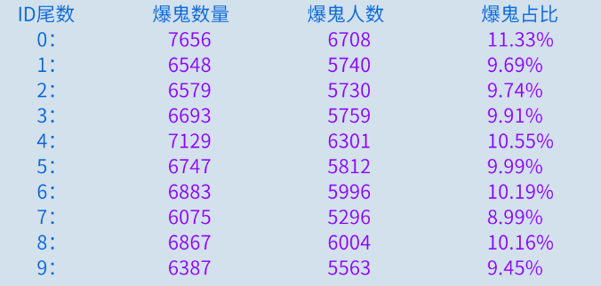
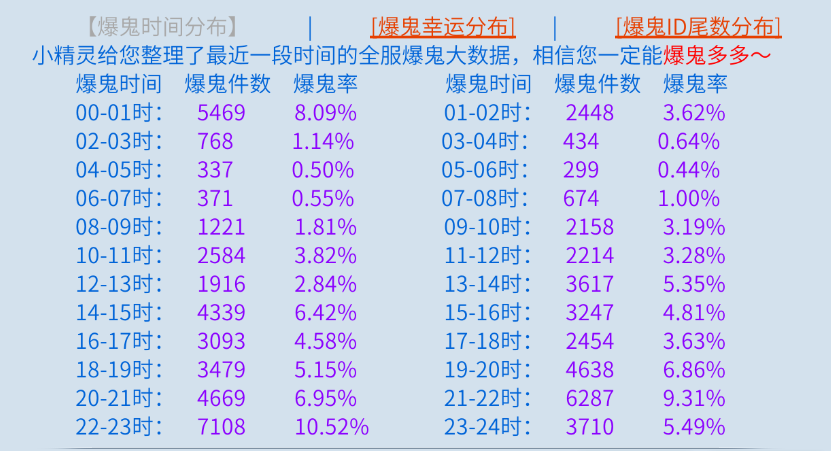

提升幸运号的爆率
爆率与幸运点数
首先，爆率与幸运点数关系不大，但幸运点数会影响稀有物品的掉落，如鬼装，带鉴定装备，逆天装备等。
游戏的概率机制通常采用PRD算法：
P(N)(爆率) = C * N
- C 代表幸运爆率增量。例如，500幸运对应6%的C值。
- N 是打BOSS的数量。
爆率计算如下：
- P(1) = 6% * 1
- P(2) = 12%
- P(3) = 18%
- ...
- P(17) = 102%
可以理解为，前16个BOSS不掉稀有物品时，第17个BOSS必掉。但红装和紫装的掉落是分开的，比例为90:10。
提升爆率的方法
叠加BOSS数量
每天增加打BOSS的数量（如黄金图，守财，一条龙，画壁等），可以有效提升爆率。
爆鬼的问题
经过测算，爆鬼的C值是正常C值的1/100。500幸运对应的爆鬼C值为0.06%，即P(1666) = 1。这意味着在打了1600个BOSS左右时，爆鬼的可能性大增。
小怪的影响
除了BOSS，击杀小怪也可以提高爆率。100个小怪的爆率相当于10个精英或1个BOSS。
提升爆率的策略
- 固定BOSS数量：每天保持40-50个BOSS，数据分布要稳定。
- 多挂机刷小怪数量，积累N值
- 保持稳定的C值：避免频繁切换装备，使用一套幸运装备打小怪和BOSS。
- 观察长期趋势：如果一周内能稳定爆出2-3个鬼，无需调整幸运点数。否则，可尝试使用自己的幸运数字作为尾数。
 - 优化打怪顺序：先打一条龙、黄金图、守财奴，再进行蜃妖和高级剧情。
- 记录爆鬼时间：监控密集爆鬼的时间段，在爆鬼率高的时间点进行高级剧情和蜃妖。

通过这些方法，你可以更科学地提升幸运号的爆率，获取更多稀有装备。